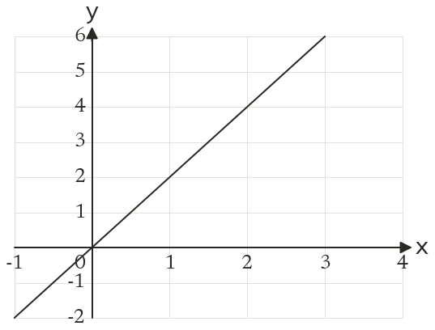
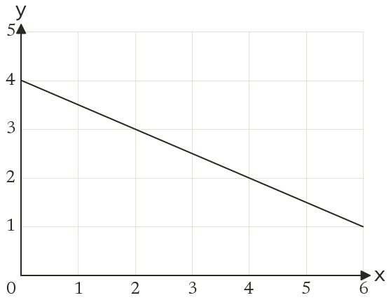

Westonbirt Maths · Line Segments, Parallel and Perpendicular Lines
Rearranging and Reading Straight-Line Equations
Name: ______________________ Date: ____________
1
Find the equation of the line.
2
Find the equation of the line.
3
A line crosses the axes at (-3, 0) and (0, 2). Find its equation.
4
On a graph, the x-axis goes up in steps of 5 and the y-axis in steps of 2 units. A line through (0, 1) rises 3 squares for every 1 square across. Find its equation.
5
Does the line through (0, -1) with gradient 3 pass through (4, 12)? Explain.
Ext
A line through (0, 6) with gradient -32 crosses the x-axis at (k, 0). Find k.

